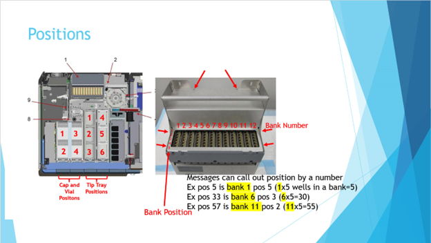

Thermocycler Background RFU Too High
Error Codes
| Dec | Location |
|---|---|
|
1160.001.00086 1160.002.00086 1160.003.00086 1160.004.00086 1160.005.00086 1160.006.00086 1160.007.00086 1160.008.00086 1160.009.00086 1160.010.00086 1160.011.00086 1160.012.00086 |
Bank 1 Bank 2 Bank 3 Bank 4 Bank 5 Bank 6 Bank 7 Bank 8 Bank 9 Bank 10 Bank 11 Bank 12 |
Complaint Description
Background RFU reading too high.
Thermocycler (Bank X): Thermocycler background RFU too high, vial position Y.
The sidecar can only process at a reduced throughput. Disabled Thermocycler Banks X.

Technical Support
May be seen in specific thermocycler wells.
Possible Root Cause
-
Debris/dust in TC well.
-
Issue with thermocycler/lamp/optics.
TS Troubleshooting
Customer can run with banks disabled.
The Thermocycler (TC) performs bank self-test across ALL 12 banks:
-
Upon initialization (sw 6.2 and 7.1).
-
Upon exiting TC power save (sw 7.1 and above).
- Explain the issue to the customer, you can relay “Samples go from 1 min between sample results to 1 min 20 seconds in between sample results" when 1 bank is disabled, so customer can better understand the impact.
- Shutdown restart to bring bank back to operation with sw 6.2 can be done, but when convenient for the customer, not necessary right away if only running Panther side.
- If customer has 7.2 SW and above, you could ask to do a TC cleaning.
- Ask the customer to continue to run and notify us if other banks become impacted or the same bank keeps getting disabled.
- If customer is not satisfied or you feel resistance on their part to continue to run, notify FSEs and dispatch.
- If they report multiple banks disabled or the same bank disabled over and over communicate to the FSEs and dispatch.
- Follow-up with the customer to see if the bank went back into operation (like a Magwash), if this is the situation, close the case as you would normally. If the issue persists as mentioned above, please let the FSE
 Field Service Engineer. know and dispatch.
Field Service Engineer. know and dispatch. - See also Thermocycler Background RFU Too Low.
Field Service
-
FSE should perform a visual check using scope on affected wells, and clean if needed.
-
FSE can compare background readings from current and previous logs to determine if they have shifted. May be on half of TC wells, as there are two Fluorometers, one for banks 1-6, one for 7-12.
The FSE should clean those specific wells or upgrade to the automatic nest cleaner. Scan background and peek lid. No thermocycler replacement is needed if no troubleshooting has been done. This is documented in TB-01457 (Thermocycler Scanning and Cleaning instructions) and TB-01078 (Fiber Nest Installation and Cleaning Procedure)
Fusion Thermocycler is designed to run with banks out of service. This allows customer to run with reduced throughput. When a well fails PantherMain Background scan, the entire banks will be taken out of service. A bank may come back into service if it passes the next PantherMain Background scan.
Background RFU too high or low error can occur when PantherMain Background scan is performed:
- Shortly after initialization, after thermocycler unload process has completed and no vials are present in thermocycler.
- Upon exit of thermocycler power save.
Background RFU failure should not be confused with “ebl” or “ebh” errors. “ebl” and “ebh” occur with an actual specimen vial in the well during assay processing.
Log example of banks taken out of service:
SMH.OnPayloadReceived: [BACKGROUND_RFU_LOWErr] from ThermoCycler (Critical) [Rfu: 265; ColorId: 0; VialPosition: 56;
]: A0 00 02 0C 55 00 09 01 00 00 00 00 38 00
SMH.OnPayloadReceived: [BACKGROUND_RFU_LOWErr] from ThermoCycler (Critical) [Rfu: 118; ColorId: 0; VialPosition: 39; ]: A0 00 02 08 55 00 76 00 00 00 00 00 27 00
SMH.OnPayloadReceived: [BACKGROUND_RFU_LOWErr] from ThermoCycler (Critical) [Rfu: 37; ColorId: 0; VialPosition: 34; ]: A0 00 02 07 55 00 25 00 00 00 00 00 22 00
-
RFU value (scan value)
-
ColorId (flurometer channel 0 = fam, 1 = hex, 2= rox, 3= red647, 4 = red677)
-
Vial position 56 (bank 12), position 39 (bank 8), position 34 (bank 7).
SMH.OnPayloadReceived: [BankStatesChangedErr] from ThermocyclerDriver (Message) [ExceptionCommandId: 0; [Bank: 1; BankState: Enabled; ]; [Bank: 2; BankState: Enabled; ]; [Bank: 3; BankState: Enabled; ]; [Bank: 4; BankState: Enabled; ]; [Bank: 5; BankState: Enabled; ]; [Bank: 6; BankState: Enabled; ]; [Bank: 7; BankState: Disabled; ]; [Bank: 8; BankState: Disabled; ]; [Bank: 9; BankState: Disabled; ]; [Bank: 10; BankState: Disabled; ]; [Bank: 11; BankState: Disabled; ]; [Bank: 12; BankState: Disabled; ]; ]: E4 00 00 00 52 00 01 00 02 00 03 00 04 00 05 00 06 00 07 01 08 01 09 01 0A 01 0B 01 0C 01
2020-05 14 23:28:54,766 [SCPMThread] EventLogger EventLogEntry Error 05/15/2020 06:28:54 (14 23:28:54) [E] (Critical , High ) [SidecarProcessManagement] The sidecar can only process at a reduced throughput. Disabled Thermocycler Banks: 7, 8, 9, 10, 11, 12. [278.000.00002]
-
This line indicates banks taken out of service.
Common failures and fixes:
Best practice – record thermocycler serial number, inspect well positions using camera/scope, and perform thermocycler scans. Scans are saved at C:\Panther\Panther Service Software\log\RFUTest.
-
Background too high, typically debris or salts from leaky vials.
- Inspect wells, perform scans.
- Clean wells: remove banks, used DI water and cleaning solution, repeat until scans are good.
TSE Example
TBD
 button at the top of the page to send feedback, comments, or change requests.
button at the top of the page to send feedback, comments, or change requests.